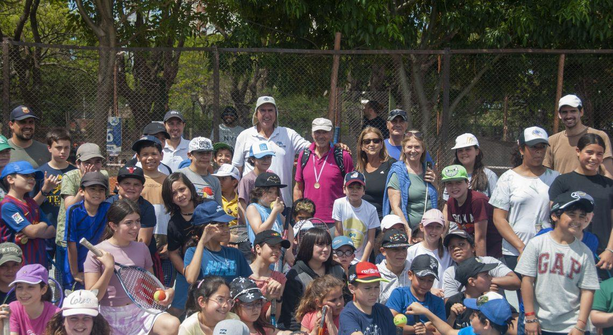

Boletín semanal
Se jugo la Copa Amateur
La Copa Amateur es catalogada como una gran éxito por parte de la Federación Uruguaya de Tenis. Tuvo mayor participantes y la presencia de la delegación Uruguaya. Torneo disputado en 2 muy buenos complejos, como los son: Avenida Tenis Club y Club Recreativo Dores en Santa Maria.
En 60 Masculino – Ganó Antonio Mortari (Br) a Ismael Acosta (UY) – 6/3 y 6/1
En Masculino 35 – Ganó Dario Acosta (Uruguayo) a Marcos Facundo Oliveira
4to clase Masculino mayor de 34 – Ganó Carlos Rojas (UY) a Luciano Haas (Br)
5ta clase Masculino – Ganó Otavio Sudati Machado (Br) a Bautista Colina (UY)
1er clase Femenina – Ganó Raquel Martini (Br) a Agustina Cuestas (UY) – 6/4, 3/6 y 10/7
3era clase Femenina – Ganó Liliana Rodriguez (UY) a Yasmin Mello (Br)
4ta clase Femenina – Ganó Raquel Necchi (Br) a Karin Nieto (UY)